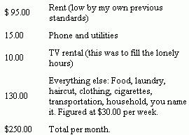

Date: March 18, 1970
To: Personnel Dept.
Subject: Retirement
Four weeks from this date, on April 15, 1970, I shall be retiring, and this constitutes my four weeks notice in conformance with company standards for professionally classed employees.
I realize that retirement is an odd term to use at my age, but it is the only one that can validly be applied. The circumstances of my life are such that I need only work half the year for my physical support, and rather than spend or hoard the excess for 25 years, which is the usual custom, I would rather take my retirement in easy stages while I am still young enough to make good use of it.
It is really sad that the only work choice open to people is that of the 40-hour/50-week year, or none at all. There are so many reasonable combinations which might be put together that each of us could live his life in a human, rewarding fashion if the alternatives were actually available. Instead, in an economy that brags about its affluence and leisure, we are working at the same mad pace that was required in far more austere periods of our history. This is something which exists because each and all of us permit it to exist, as though we do not run our own lives or our own business functions. A business is no more than a collection of individuals, and when they decide to control their own destiny, they shall.
Fortunately, there are still personal alternatives available, and this is mine - periodic retirement.
Most Sincerely,
Irv Thomas
Barely eight months before the above resignation was written, I had arrived in Seattle with less than $400 in my pocket and the suit on my back. I did not know a soul in town, and had no idea where or when I was going to find a job. I had just left a shattered marriage behind me in California . . . along with all my worldly possessions and a job paying $12,500 per year. That my wife and I had been living to the hilt of our income was evidenced by the small amount of cash I had brought with me. And yet, here I am, loftily telling my boss where he can stuff it because I don't need any more of his filthy loot!
Fantastic? In a way, yes . . . but not nearly so fantastic as the way all of us have been thoroughly conned into the idea that we really have to work all year to stay alive and pay our bills. It just isn't true, and I'm going to prove it and show you the way out.
Though it may be very hard for confirmed rat-racers to believe, neither economics nor social pressure is keeping you from living the kind of life you'd like for a large part of the year; of having the time to develop the creative or academic activity to which you would really prefer to be devoting your life. The price is a willingness to accept less income, and that's what this article is all about.
Three thousand per year is not a poverty level existence for a single person, even in the inner city. You who need five, eight or ten thousand a year are victims of a cluster of addictions that can be broken. There are easy and hard ways of breaking habits. There are even pleasant ways.
This is not a theoretical concept. I have lived through the breaking of these addictions, and although some of it hurt, I have learned how to keep my balance. I can pass many of the creative tricks on to you. There are withdrawal pains to be sure, but be consoled - they are only temporary and there are many ways of easing them.
My own way out of the morass was forced upon me. The costs of resettling, getting a job and just the barest of living essentials drove my pocket cash into the ground in no time at all. I had isolated myself completely and intended to stay that way, so there was no answer but to dig in hard and just hang on.
I laid out what I called a 'bare bones' three month plan for myself, and just counted the days, knowing that if I stuck with it, I'd be okay. My monthly allowance was:
The rest of my $400 cash on hand went to bills I had left back in California, and toward paying for a job referral. This was a prudent investment since it enabled me to get my first paycheck before I was reduced to begging in the streets.
I did live through it. I'll spare the details, for they are incorporated in the rest of the article, but I should say here that a good portion of my idle time was spent planning the luxurious life I was going to live after the ordeal was over: How I was going to get a brand new VW bus and outlandishly outfit it as a live-in camper.
But a very strange thing happened before the three months were up: I realized that I was no longer hurting; I no longer had withdrawal pains. I had actually adapted to this spartan schedule and felt almost as fully provided for as back in the days when I used to have trouble keeping my monthly expenses within an $850 per month net income!
At first this was merely curious - an interesting little insight into the intricacies of the human mind. Then the real implications slowly began to dawn on me. Two hundred and fifty per month is $3000 per year, which equates to about 4.5 working months at the salary I was earning. Wow! True, it didn't provide for a few occasional extra expenses like doctor bills, a new suit, and perhaps something set aside for real emergencies - but how little more that would require! I began to see the real nature of what I had achieved - a kind of independence that all my remaining years in the system would never have been able to buy.
Some interesting relationships can be seen from this graph. Relatively small increments in monthly income will release each month up to about six, but beyond that point the required increase for each free month becomes more prohibitive as you go up. This is an automatic guard against ambition creeping into the picture. Ambition is simply not worth it.
Also, strange as it seems, the less you are earning, the easier it is to gain free time! At $300/month, each $25 you knock off your living expenses gives you a free month, while ar $600/month it takes a $50 reduction to gain another free month.
I have since cut my monthly costs to $220 by eliminating the TV (it turned out there were not many lonely hours), newspapers (I'm happier and have much more time without them), and cigarettes (this just seemed to drop of its own weight when I got the bicycle.) And there is still some slush left. I'm convinced that I can do quite well without the phone, for instance.
It may sound, by now, as though I'm leading a sterile, ascetic existence - but nothing could be farther from the truth. I don't mean to imply that I am only spending $220 per month, but merely that this is the cost of my necessary support. A few well-chosen and inexpensive activities keep my hours well filled, and my life is richer and more rewarding right now than it has even been within my memory. No small part of this is the immediate prospect of a half-year of total removal from the rigors of the rat-race.
At this point you are probably wondering what is the big secret. How is it done?
Well, it's really a series of little secrets - a kind of mental tug of war with yourself. You keep the lid on until you think something is going to explode, and then you let off a bit of steam - but in another direction. That is to say, you reward yourself when the pressure is too great . . . but in such a way that you move in the direction you want to go instead of sliding back in the direction you are trying to get away from. It is difficult to select an illustration, because the reward must be a very personalized thing, and if I give an example that doesn't happen to turn you on, the point may be lost. But I shall try anyhow, so keep that caution in mind.
During the period I was going through automobile withdrawal, and before I had my bicycle to compensate, the dreary weekends of relative confinement started to weigh heavy. All that beautiful northwest country around me, and I could not get out to it. Renting a car would be far too expensive; talking a friend into a country drive would only rub in the deprivation I was going through and bus rides leave me cold. But then ferry boats are something else again!
Seattle has long ferry routes out to country islands in the Sound, and for a cost of just a few dollars for the whole day, I was in another world. I returned much refreshed and laughing to the skies at those poor people busting up the freeways to get away from town! That was a piece of creative withdrawal - I removed the pressure, at the same time moving closer to the goal. I also fortified myself with knowledge of a relief valve that I could call upon again.
Replacement is another technique. This is really a longer term reward that fills the gap left by something you've given up. Let's say you've got the habit of fraternizing down at the corner bar every Friday night and you always drop ten or fifteen dollars before Saturday morning rolls around. So you make the Great Sacrifice. Don't, for God's sake, try to sit home on Friday night with a book or TV. You'll be back in the bar within two weeks. Find something you've always wanted to do that involves other people, for that is really what you're looking for. Try a neighborhood discussion group or volleyball at the high school gym. Even if it, too, costs money. The important thing is that you're breaking an addiction, and each one you break gives you that much more confidence.
Then there is the principle of making it easy on yourself; which is sort of an overall guideline. In the first flush of determination; it is so easy to go plowing ahead and damn the torpedoes. But it's a lot wiser to consider the expected consequences of every move you make, and try to gear yourself to the effects. If you are moving from a three room to a two room apartment to save $30.00 per month, for example, what will the space reduction do to your daily living? The advance preparation you make to offset the sudden feeling of being cramped and stifled will affect your ability to accept the adjustment. This principle is of vital importance in dropping out of the automobile game.
This is a good point to begin detailed examination of how to live better for less, for the automobile is way ahead of every other flagrant money-waster in our lives.
First of all, let's see what you - YOU - are really paying for the questionable pleasure of driving one. I am going to detail my own cost figures here, but it's very important that you get a pencil right now and figure your costs alongside mine, for unless YOU realize what YOU are paying, you will not find the necessary incentive to give up your chariot.
Mine was a modest car, price-tagged at $3400, with a four-year turn-in value of $1000 . . . and I've been very reasonable with these estimates. It is possible to spread the capital expense of a car over more than 4 years, of course, but repairs have a way of catching up with the paper savings, quality being what it is. Most studies have shown that the difference between new and used car total operating costs is not very great. These are the per year figures:
That is $1704 per year! If your net take home pay is $850 per month, you are putting two months work a year into supporting that car. If your net take home pay is $570 per month, that car is making you work three months a year for its support. Since this about spans the normal range of take home pay, it means that some 20% of all the work done in this country is solely devoted to supporting automobiles! Are you quite sure you want to be a part of that addiction? There are alternatives if you don't.
I would like to say that I quit driving because I reasoned this all out and exerted a tremendous force of will power to sell my car and be done with it. I didn't, of course, and I don't think anyone really can. There are more creative and pleasurable ways to give up addictions. Certainly more effective ways.
In my case, I was literally forced out of my auto addiction - I had no car and no money to buy one. There is a lot to be said for this method, since nothing in the way of will power is required. Unfortunately, these conditions cannot be artifically created, so those of you - other than the lucky few who are flat broke (and they are lucky) - will have to approach it from another direction. A little relocation of your life might be necessary and, as you consider the plan that I lay out, you might think about the 2-1/2 to 3 months each year that you're working to support that bummer out there in the garage.
First of all, you will have to find some way of getting your job and your home within a mile or two of each other. Whether this means changing one or the other is for you to decide, but it is a basic requirement, for nothing can kill resolve faster than a bad commuting trip twice a day. A rare exception to the "two mile" rule can be made if you have access to a truly good transit system. But don't rely on one that takes an hour in each direction and don't rely on car pools or good neighbors who happen to be going your way. Part of your purpose is to learn how to live without the beast.
The moving bit may be required for other reasons. It is essential that you live within close walking distance of a reasonably good shopping district and that there be some kind of public transit (preferably a couple choices) within range of your home. Those are the hard requirements. Beyond that, I would suggest that you be near a library, a park, some decent inexpensive eateries, and in the kind of neighborhood you think you might enjoy (people, trees, whatever turns you on.)
What we have accomplished by this move is the neutralization of potential pressure points. You still have the car, but you're going to stick it in a garage. You might not be using it very often any more.
Now you are going to walk to work - every day, rain or shine. If the weather really gets heavy, treat yourself, to a bus ride, not a car. But try to avoid any kind of ride. This is psychological conditioning. You are re-experiencing your youth and relearning patterns of living that don't involve an automobile. And you will do one more thing during this breaking-in period. Each day you walk to work, you'll set aside whatever it used to cost for driving to work. Gas money, parking money, bridge or highway tolls if there were any.
When the pot has $100 in it - or sooner if you can't wait that long - go down to the local bicycle shop and order yourself the flashiest 3 or 10 speed bicycle you can find because you have earned it. The walking has put you in good enough condition for you to start riding the bike the day it's ready. Now you are really on your way to beating the game.
During the weeks you've been walking to work, you've probably gotten further into the spirit of the thing by doing most of your shopping on foot and using the bus lines for short trips that are outside the immediate neighborhood. You have found that many things you habitually went downtown or to a favorite store across town for are obtainable right in your own neighborhood, and you have even begun to develop a sense of identity with the shops in the area.
Now, with the bike, your neighborhood will expand from one mile to several, and you'll find yourself seldom taking the bus anymore except when weather dictates or you know you'll bring back packages (although you'll be surprised at how much a bike carrier with a few straps can hold.) If you have not been leaving the car in the garage that much, it's time you begin to do so. This is the part you'll have to put some will power into to start, but very soon you'll be realizing that 'that trip wasn't necessary' after all. Remember: It is the automobile itself, not the need of it, which encourages its use.
Set yourself a countdown period - say 30 days - at the end of which you'll just get rid of the car. Period! Again, think of the 2-1/2 to 3 months. The leap has got to be made, and the psychological value of the countdown is that you will be emotionally pacing yourself toward a point in time. When it arrives, you'll be ready.
Depending on how addicted you are - how much you've actually been using the car these last few weeks - you may panic at this point, so it's best to be prepared for it. Line up some family, friends or neighbors who will agree to rush over at a moment's notice if some emergency need for a car develops. It won't. This is just your last minute emotional ploy to keep the habit. I have had only one-single occasion in the past eight months when I had to have a vehicle - to pick up some goods from a warehouse - and I rented a truck for a few hours. If an emergency does come up, there are always ways.
I am not trying to say that you won't be making certain sacrifices. Like you won't be able to go out to that wonderful place in the hills that serves a fantastic dinner for $6.00. So you'll save the price of two fantastic dinners in the hills. You won't be able to see that new movie on the other side of town that everyone's talking about. Funny thing about that sacrifice; you'll be surprised to find out you don't really care. Movies are like impulse purchases - you want them right now, but they're so very easy to live without.
My rule of thumb has been that if anything is worth travelling half way across town for, it's worth taking a bus for. It's amazing how discriminating my taste has become. When I talked about $1700 per year for the car itself, I didn't even mention the hundreds of dollars you'll probably save on things that really weren't worth bothering with anyhow. You'll come to realize that there are a lot of little addictions which support the big ones.
There are other dividends awaiting you, too. Suddenly you are no longer living in a metropolis, but in a community. Your basic horizons have pulled back in, and you begin to feel a closeness to the neighborhood you call home. Neighborhoods haven't vanished since your childhood, as you might have thought, your orientation has just overstepped their boundaries. You have `progressed' from the intimate seminar to the lecture hall, and now you can return to where relationships are once more on a human basis. You probably learned that on your daily walks: There actually are people along the way. Animals too. I used to have a regular morning chat with an Alaskan husky and a couple of squirrels on the way to work. Pity the prospect on the crosstown freeway!
A word on bicycles if they are so far back in your life that you can't conceive of a grown man riding one . . . or if you're afraid that you'd be confused by the geared variety: Bicycles are a popular form of transportation for all ages in many European countries. Most of Scandinavia boasts a ratio of one bicycle for every two inhabitants. This country was also going in that direction during the 1800's, before we became crazy about power and 'progress'. Get a copy of BICYCLING Magazine at any bicycle shop, or look up the local bicycle club or American Youth Hostel chapter. You'll find that there are a great many older people who ride bikes quite unselfconsciously. Gears are easy to learn and worth their weight in silver. Don't let them scare you off. If you are absolutely certain that you'll just be riding around the neighborhood and to work, a 3-speed will probably do. But if I were you, I wouldn't bet on any such certainty. A 10-speed bike is not just a 3-speed with 7 more gear ratios. It is as different from a 3-speed in performance and handling as a 3-speed is from a balloon-tire 1-speed bike. There are so many delightful things you can do with a touring bicycle that you may be cheating yourself if you don't go all the way: Long weekend rides in the country, camping vacations, hosteling in certain areas, air-freighting yourself and bicycle to faraway places, etc. All of these can be done with 3-gear models, but are easier and more enjoyable with a 10-speed bike. If you're in doubt, find a place you can rent or borrow one a few times. Frame size and seat adjustment can also make all the difference in the world, so check these carefully with someone who knows the answers before you come to any conclusions.
And, speaking of freeways, have you any idea what it's like to be without that mad, blasting speedway for a part of every day? Think about it the next time you're cutting into the morning traffic mess. It also feels good to know that you have made a personal contribution to cleaning up the atmosphere. Suddenly you're aware of all the hypocrisy being spouted around as everyone waits for Big Brother to do something about it. You stand a little taller.
In fact, there is something in you that stands a lot taller when you realize you've busted the habit. You know you're no longer the pawn that you've been played for much of your life. .You have just whipped the most powerful mesmerism that the industrial complex has been able to throw at the American public, and you feel damn good and clean about it. In a way, that one single fringe benefit has been worth more to me than all the dollars I've saved. I simply know I'm my own man now, and the system can never enslave me again.
There is much more to be said about cutting your cost of living, but the automobile is the cornerstone to the whole subject. All the other savings you can put together, in one fat bundle, may approach - but will never equal - what you save by doing away with the automobile. This is probably true even if your 4 wheels is a second-hand clunk that will never see another used car lot. So if you can't make the car break, my advice is to forget the rest of this article and accept your servitude. I am sure there are hardship situations where it really is impossible to be without a car and, if that's the case, you'd better work toward altering the situation before tackling this approach.
While no other waste in our addicted lives carries anywhere near the impact of the automobile, housing is probably the closest runner-up for most of us. The standard societal myth says that 1/4 of your income should go for living quarters, which is ridiculous. Obviously the man who earns $800 per month needs the same living space and comfort as the man who earns $400 per month. So much for mythology. It is safe to say that everyone could probably cut his cost of housing by 10% and never feel it; by 20% and just begin to feel it. Some of us could probably whack it by 50%!
I have always been personally sensitive to the quality of my living quarters (isn't that a beautiful example of a rationalized addiction?), and when I began looking for a place in Seattle, I regarded a single bedroom apartment as 'bare essential'. I found a fairly nice one at $115.00, but it would not be open for another month. Since it was a bit lower than most in the neighborhood, I took a $95.00 studio apartment in the building to wait the month out. I thought I'd feel cramped, but I really didn't. And that's how easy it is to save 20%.
But you have to be careful with substitutes that add up to less than what you were really looking for. Any of a hundred little things - sometimes as insignificant as the way people can look into your window from the street - may send you running for the door after you've been inside for an hour, and that can be fatal to an economy drive. Somehow, after you've moved in, an apartment never looks the same as it did before. I have not been able to figure out this illusion, but it never seems to fail. So proceed with caution and look carefully at everything, especially those things that are most important to you, personally.
A good idea is to settle back quietly in your present quarters and think about the things you have consciously appreciated. Make a list of these points to watch for in your search. Check the neighbors, both around and above, for you are likely to be hearing their TVs, parties and arguments. Are they the kind of people who have much of these and - if so - are they tractable? Pay particular attention to the managers, for they will have a lot to say in your life. They should be easy going, tolerant people (but not too much so, for they also rent to your neighbors.) Naturally you'll make compromises, but try to follow your real feelings, and don't make compromises where you can't emotionally afford to make them. It's a matter of knowing yourself.
Neighborhood, to help you drop the auto may be more important than the actual residence itself: Near your job, near good shopping and near transportation. It is also good to be close to whatever institutions have direct relevance for you: Schools, gyms, churches, parks, libraries, community gathering places, or whatever. These are general points to look for in house hunting, but they assume a greater significance in the context of saving money. You are going to be thrown hard upon your personal resources, and it is most important that the environment be as supportive as possible.
If you do find yourself committed to a certain neighborhood, there may be the temptation to take a place as expensive as you've been living in for 'just a month' while you look around the district for something more reasonable. Don't do it. You are are giving in to the addiction and only making it harder on yourself in the long run.
Most of the information in this article is directed to the single person, for that is the nature of my own experience. For larger family units, some approaches - such as the question of shared living quarters or eating out versus eating in - may have to be changed. The general proposition of buying back your life by cutting addictions, however, is just as applicable to any size family unit.
The critical question is not how many individuals are living on how many incomes, but rather: How many unnecessary addictions are those incomes now covering? A family living on one income will - of necessity - have already slashed (or never developed) some addictions and will, therefore, have less to cut. On the other hand, a couple with two incomes may have so many 'monkeys on their backs' that they simply won't believe how much they could cut their working year.
Regardless of family size, however, the automobile is a common addiction that cuts across all income levels. It's safe to say that no matter what your family situation demands in other respects, the release of the automobile will return to you 3 months of every year, and give you the opportunity to find a new lifestyle.
How well you know yourself can be the deciding factor in whether your withdrawal trip is an easy or a hard one. Each of us has his own private hangups - things which are critical to our enjoyment of life. To the extent that your real needs have been obscured by addictions, you may have some difficulty determining what these personal quirks really are. It is worth putting some serious thought toward finding them. Many years ago I tried to cut expenses while in school, and I rented the smallest, ugliest, most miserable room I could find because it was also the cheapest. I learned very quickly that I have certain basic living requirements which I cannot deprive myself of, at least not yet. I can put up with a good deal of other kinds of privation as long as my living quarters have an aura of comfort and cleanliness about them. It is worth it to me to maintain this indulgence for my own peace of mind. If you seem to be having withdrawal pains out of all proportion to something you have dropped, look closely to see whether you have stumbled into such an area. But examine it carefully, for the real emotional need may be hidden under a facade.
One thing I've found to be true in rentals is that there are price patterns that seem to go in steps. You may find very little difference in rentals from $100 to $120, but then $125 seems to be a large jump in quality. Look around enough to determine these patterns, and then try to rent at the bottom of a step.
If you're geared to sharing living quarters with others, you are in a position to cut way back on housing expense. It should not be difficult to arrange lodging at $40 or $50 per month, or even less. Obviously, this can mean a sizeable saving to one who has been living in private quarters, and is worth considering if there is any likelihood that you can so adapt. There are various arrangements to suit individual tastes - all the way from sharing living rooms to sharing beds - with several steps in between.
Older multiple-bedroom homes can be shared by 4 to 6 people with a good deal of personal privacy possible, but there are several tricks to watch for. If the owner is offering on this basis, he may be using the gimmick to charge 50°/ more than the rental is really worth. Or the prime renter may be subleasing in order to cover his own rental cost and expect to pay nothing himself. Check the situation closely, and look for equivalent values in the neighborhood. Also be wary of the situation with 4 or fewer co-renters, where the departure of one would throw an abnormal rent burden on the others.
Years ago, boarding houses used to be a popular answer to inexpensive living for single people. In the large cities there are still some good residence houses - as the more presumptuous ones call themselves - but most are generally much deteriorated from former glories. The few good ones are not cheap. I would advise you to avoid this approach unless you want to afford the good ones. Most of the others are no bargain when you find out that their food often drives you out to restaurants.
Those of you who are buying homes have an entirely different set of circumstances to contend with. In any other context than this article I would be hands down in favor of the home, and where you now have other values going than those advocated here - country property, productive acreage, a real retreat from urban life - I still advise you to hang on to the place. BUT . . . if you have a cute little suburban box with 27 inches of grass to your neighbor's property line, the answer is no.
The very simple reason, of course, is the car. Suburbanites are commuters, and the automobile is the cornerstone of suburbia. You will have to decide if your home is worth slavery to the car. The choice is that direct. If you own or are buying what I call productive country property, you should bend every possible effort to get your job out to where you live. Or find some dependable alternative to your own automobile for transportation to work. If neither is possible then you, too, are going to have to face the slavery-to-the-car question.
It should be becoming increasingly clear how much we are really slave to that smog belching monster. It not only robs us of 20% of our personal lives, but it has forced upon us some powerful pressure points to perpetuate its own existence. It reminds me very much of the computer in Star-Trek which refused to let anyone pull out the plug.
I'm sure this will come as quite a surprise to most of you, but I eat almost all my food out. I manage to do so for under $20.00 per week, thus defeating another popular American myth, that it is cheaper to prepare your own food. It might be for two persons, but not for one.
I didn't come by this through any brilliant revelation, but as a natural development of my 3-month 'bare bones' program. My studio apartment had a fine electric stove and refrigerator, and I drew up a list of the most essential cooking and eating ware I felt I would need. It came to almost $15.00 - just enough to have to put off for a couple weeks. So I decided to make do with hamburgers till I could afford the plunge.
Whether it was fate or luck or purely the conditioning of necessity, I don't know, but I found a place in the neighborhood that served the most fantastically delicious and filling broiled cheeseburger on a french roll that I had tasted since I was a kid. This, with a large salad and coffee - a full meal - cost only $1.40. I am still eating those cheeseburgers 4 or 5 nights a week, and if the thought of such monotony makes you sick, they are still delicious, nevertheless.
The breaking of consumer addictions gives us a radically new frame of reference. Many kinds of living - which seem remote, if not altogether impossible in your present straightjacket way of life-become reasonable.
I got to wondering how one could live in the country and work in town without owning an automobile nor being subjected to daily bus commuting. This is the basis of one variation of the HAVE-MORE Plan in issue No. 2 of THE Mother Earth News. At first it appears impossible, but there actually is a creative way and it illustrates how to mold this plan to your own needs.
Let's say you have a piece of country property now, about 50 miles out of town, and you drive the distance and return daily. If you take the bus, it's $2.00 each way - $88.00 a month - plus the agony of the daily trip. Other than that, you can get along on $250 a month and your take-home pay is $500 per month. This means a basic work requirement of six months per year.
But there's another way: You could share an inner city rental close to your job with friends at $50 per month for the five day work week. This cuts your commuting to one round-trip a week at a cost of about $17.00 a month. That's a total of $67 - which is high - but still lower and easier than the straight commute bit.
What would this actually do to your six month work plan? Six times $67 is $402 . . . or one more month of work. Seven months of weekend farming, and five months of full-time country living!
I vary it occasionally with something healthy and inexpensive like liver, fish or ham and eggs. But in all honesty, the price and quality keep me coming back to the cheeseburgers. My weekly dinners are less than $12.00, even including the indulgence of a good $2.00 chinese meal every weekend. Where is the housewife who can keep a dinner budget much below that level?
Lunch is a passable hot meal in the company cafeteria and costs about $1.00. On weekends I try to avoid a mid-day meal because I usually have an earlier and somewhat larger dinner. The only thing I eat at home is breakfast. During the week this is simply a bowl of dry cereal with a rich mix of milk and half & half, and a glass of orange juice. On weekends, I sometimes switch to soft-boiled eggs with melba toast and fresh grapefruit. All breakfast supplies cost, perhaps, $1.50 per week. I used to bring home cookies and pastry for the in-between hours but that tapered off. Hard candy - a good, cheap energy source - and seven-up are my only pacifiers now.
I made one small start at setting up a kitchen six months ago, and it taught me to let well enough alone. I'd gone fishing with friends, and brought home 8 or 10 'free' trout. Well, that meant a frying pan with spatula, one dinner plate, silverware (other than my one spoon), butter, bread, lemon and who ever heard of fresh fish without fresh tartar sauce, so mayonnaise and pickles, and such a dinner would need a salad, so two kinds of lettuce, tomato, vinegar and oil! My free trout dinner cost me nearly $10.00 plus an hour of preparation and cleaning up. The pickles, oil and vinegar are still sitting on the shelf.
One cannot, of course, call food an addiction. But the creative preparation of food can be an extremely expensive hobby, with literally no end to its possibilities. In the old days I used to follow the 'live to eat' school of thought; but I have reversed my field, and I think I have lopped another few weeks off my working year in the process. If I were to try and draw generalized rules from my experience, I would make them these:
1. Keep home foods down to the simplest of preparations, mostly those that can be mixed with milk or water.
2. Breakfast should always be a home meal because it requires the least of all utensils and condiments. A non-fried breakfast is best for digestion early in the day.
3. Avoid processed store foods like TV dinners or any completely pre-prepared foods. You pay a tremendous percentage for the convenience, and if some seem cheap it's because the quality is poor.
4. Find the best of the neighborhood restaurants (they may be the moderately expensive) and stick to their cheapest foods. There are such things as 22 cent burgers, and I suppose there are people who can stomach them, but I have never been one of those people.
5. The most reasonable meals, and the ones you can usually depend on for quality are eggs, fish and liver. Don't overlook salads; $1.50 might seem expensive for 'rabbit food' but it can be an entire meal in itself, and very healthy.
6. Eat at the counter so you don't feel obligated to tip. I have found, to my happy surprise, that I get every bit as pleasant service from waitresses I consistently never tip. Another myth busted.
7. If you pay more than $2.50 for any meal, you are paying for atmosphere, not food. If you are irresistably drawn to dinner dating, try Saturday afternoon lunch. It's easily as rewarding socially, and far more economical.
8. Try to find a good Chinese restaurant. They have a huge variety of very healthy and inexpensive dishes - especially for group dining - and it can really take the edge off a monotonous economy diet. Chinese and Filipino cooks, incidentally, are among the best you'll find anywhere.
9. If the place you work does not have an inexpensive cafeteria n ose around some nearby large companies. They are frequently open to the public but, even if not, it isn't at all difficult to move right in as though you belong. These should be 20-30% cheaper than commercial eateries.
10. Many people do quite well on two meals a day, a late breakfast and an early dinner. Excellent if you have that kind of flexibility in your day. A bowl of soup is an effective and cheap in-between dinner-postponer. So is toast and coffee.
11. Try to stop thinking of food as an experience or a reward, and see it simply as fuel. Tasty fuel, to be sure, but that's all.
I have lived variations of my own "work six months - retire six months" plan for 12 years and I agree with almost everything Irv says in this excellent article.
It has been my experience, however, that one person definitely CAN enjoy a more varied, more filling, infinitely more satisfying and less expensive diet by eating IN.
As a matter of fact - although a refrigerator is indispensable - a stove isn't even necessary. A simple little one-burner hot plate will do the trick and a two burner unit can really set you up in grand style.
The capital expense won't bankrupt you, either. I've bought used, single-burner models from the Salvation Army for $4.00 and the most expensive push-button, twin-burner, chromed, variable-heat hot plate I ever saw (and purchased in Seattle four years ago) only set me back $24.95. That seemed a big investment at the time (as did the $4.00 unit when Barry Slothauer and I split the cost in Honolulu) but it's already had a lot of rough use from the west coast to North Carolina to Ohio and should faithfully serve for another 10 or 20 years.
The only real drawback to a hot plate is the limited heat range of the average unit. The lowest heat is always far too intense for simmering stews and other lazy cooking. I solve this problem by bending the wire from three or four heavy coat hangers into a series of triangular, three-legged racks of various heights. Using a combination of the heats on the plate and a high or low or in-between rack, I can vary cooking speeds over a greater range than the most expensive electric stove. Incidentally, these racks get HOT so I always switch them with the same pair of pliers 1 used to make them.
I have an old Army surplus mess kit that cost me - I think - two bucks 10 years ago and it fits a round hot-plate burner perfectly. It has a tight fitting lid and, over the years, I've eaten some heroic stews out of that rig.
Stews are beautiful. Just brown one or two or three kinds of meat, throw it into the pot, add all the vegetables you can find, top with a layer of barley and some vinegar and - adding water as needed - let the whole savory mix bubble lightly for about three days . . . if it lasts that long. Dip out steaming bowlfuls as you desire.
I've even baked cookies and cornbread on a hot plate by draping an aluminum foil "oven" over a flat pan set up on a high rack. The idea, of course, is to set the foil up so it directs as much heat to the top of the "cookie sheet" as the burner applies to the bottom.
By substituting a blue enameled roaster for the flat pan, I have also "oven roasted" some memorable pork shoulders and chunks of beef.
Have you ever baked a potato by burying it in the sand near a roaring beach fire? I've worked a variation on that by wrapping a potato in foil, covering it well in sand in a big tin juice can and baking the whole thing on my trusty hot plate.
All in all, with a cheap burner, a pair of pliers and a few odds and ends, I've eaten exceptionally well for months at a time on $8.00 to $10.00 a week. - JS ODDS AND ENDS
By the time you have gotten rid of your car, cut down your rent and faced up to the tyranny of the local supermarket, you will begin to see all the creative possibilities of cracking myths and breaking habits.
I wondered for weeks if I could live without knowing what was happening in the world around me, and finally made the bold move of cutting off newspapers and news magazines. The world and I went our separate ways. I, perhaps a little more ignorant, but a few dollars and many hours richer. The straight press never had much to say to me anyhow, and I'm able to put more reading time into things of value.
I'm constantly telling myself that I must see this or that show, but I seldom get as far as the box office. When I do, the price almost always turns me off, and I have somehow survived without all the great epics I've missed.
The rented television was my original creative attempt to kill the theatre urge, and it worked very well, so I considered it a good investment. But eventually it, too, became a drag and I turned it in. If I had owned the set, I'd still have it, but now I'm in the unique position of living in a nearly non-advertising society (except for billboards) and it's really kind of nice and quiet. My head is less bothered without all that crap, and the tiresome breathless news reporting that goes with it.
After awhile, excess addictions begin to fall away freely, as you sense - on a deep emotional level - that you can live without them. One week in December, my smoking dropped from a pack a day to one-third that amount. I neither pushed nor fought it. After a couple weeks, I raised the nerve to try and go all the way, and it was easier than I had expected. But even there, I exercised a creative touch: When the urge became too strong, I filled a pipe. Now I smoke perhaps 3 or 4 pipefuls a week, and there is no guilt or strain involved. If you've ever added up the cost of cigarettes, you'll find that they're a considerable expense. A pack a day costs a week of work a year to support!
The whole trick to this business is to try not to drive yourself into the ground. Be alert to withdrawal pains and find a creative compensation. You won't always be able to, but each time you do, it gives you a lift and makes the whole trip that much easier. You're not out to prove the strength of your will, but the agility of your imagination.
No matter how well you fight the battle, there will be days during those first few months when everything seems to fall in on you. Here's a tip to remember: When that happens, sit yourself down in total privacy and quiet, with a notebook, and just write about it. A letter to yourself, with all the deep feelings you can pull out. I don't know why, but it takes the pressure off. It does more, but I'll leave that for you to explore.
FRINGE BENEFITS
By now, this might sound like a real monastic trip, and you're probably wondering if a few months to yourself each year is really worth it all. For my part it is, even if that were all there was to gain. And there is so much more. The release from work is only the piece de resistance.
First of all, let me make sure you understand very clearly that you are not expected to confine your spending to $250 per month, or whatever figure it is that you finally arrive at. My checkbook is full of things like $30 for a U course, $100 for a bicycle, $10 for an underground magazine, and so forth.
It may seem as though I am defeating my own purpose. Far from it! These are all discretionary purchases, not addictions, and they each enrich my life. The main difficulty with most budget plans is that they lump discretionary and supportive expenses together and kill all incentives by putting a clamp on both. The purpose of this program is to return your life to you. The benefits can be either six or more continuous months of free time each year or an equivalent amount of discretionary cash.
If you are wise, you will mix these alternate possibilities in some equitable combination based on your own personal needs. I am quite content that I can afford any luxury I care to purchase, but I habitually measure the working cost of these luxuries against their real value to me. As a result, I work a month or two longer than I might absolutely have to in order to give my life the level of meaning that I prefer. I am willing, in other words, to work 4 days out of this year to buy a bicycle, but I am not willing to work 68 days of this and every year to pay for an automobile. It is as simple as that.
Now we can talk about some of the fringe benefits.
We're usually inclined to measure our various consumer addictions in terms of money alone. In this article, I have so far related them to working time, but some of them ` can be related to another kind of time that I'll call active time. The cigarette habit cost me 6 days a year in working time, but virtually nothing in active time since it is not done to the exclusion of other activities. The newspaper habit - on the other hand - returns only 2 days in working time, but its dividend in active time is out of sight. If you spend only half an hour each day with the daily newspaper and 3 hours each weekend with the Sunday paper (not at all abnormal), you are putting 312 hours per year of active time into that pursuit. If we relate that to the 8-hour working day, we can say that the equivalent of 39 working days is spent reading newspapers!
It does not take long, with the concept of active time, to build a sizable vacuum in your personal life when you start dropping addictions. Newspapers, TV, movies, meal preparation time, unnecessary auto trips - there is a huge void to fill, and it has to be filled positively during the critical withdrawal period if the program is to be a success.
This is your golden opportunity to start living the way you want . . . even while you are still tied in to the rat race. All the hobbies you've never had time for; all the pursuits of youth you had to drop when you entered the system; all the activities you have only dreamed about until now become new grist for your imagination. At one and the same occurence you have both the discretionary cash and the discretionary time with which to begin reshaping your life.
If you've only recently become embedded in the system, the ideas will be quick and the choices easy. On the other hand, you may draw a total blank if you haven't enjoyed this kind of freedom in many years. Which way to move and for what? The following suggestions may help:
1. Get the course listings of the local night schools - preferably university, but adult secondary school if necessary - and find something that you just feel like taking. Perhaps in a field you have always wondered about. Don't take any course to advance your career or because you think you should.
2. Go to the library. Not to read, but to browse. Walk along the open stacks of non-fiction and pick up whatever interests you at the moment. Follow your own intuition. If this doesn't work at once, try it again. You will soon find yourself drawn to some part of the library for either a study-type or an activity-type subject. Pursue your interest wherever it leads. Branch libraries are best for a start, if you bury easily under sheer volume.
3. Also at the library, ask about local clubs or discussion groups. If you're bashful about this, turn to the telephone book under Clubs and run down the list. If something sounds good, phone or write for more information.
4. Check the local recreation department for sponsored community activities and groups.
Find something to fill those vacant hours. It is far better to have too much to do than too little. If you feel pushed, you can always cut back again.
The concept of discretionary expenses may need more clarification. In your current lifestyle, discretionary expense is the major portion of the budget because - by definition - it is that which is not necessary for life support. The object of this program is the entire separation of discretionary spending from support expense. Then - with the awareness that it IS totally discretionary - to turn such spending toward that which has real meaning in your life.
The support expense, once its true level is achieved, is necessary and inevitable. It should equal from 4 to 8 months work per year (see Chart No. 1). Discretionary spending, however, competes directly against free time and must be evaluated accordingly. There can be no hard rule on this spending because it is a function of each individual's needs and many variables are involved. But there are some good guidelines.
Chart No. 2 will show you the cost in work time for different levels of discretionary spending as a function of your take-home pay. This will enable you to arrive at a target amount according to how much additional time you are willing to work. But beware of judging the discretionary limit by your current standards if you are intent on attaining and preserving your freedom.
There are two basic rules for discretionary expenditures: One, each should be a single purchase and not a continuing series; Two, the purchases should not be immediately consumable. A bicycle is a beautiful example. Even though relatively expensive as a single purchase, it is a one-time purchase - practically maintenance free - and will last for years. Other good examples are musical instruments, well made clothing, a radio, reference books or a typewriter.
The pitfall to watch for is the item which appears to be a one-time purchase but requires or induces continual outlay. Phonographs, cameras and golf clubs are examples. These must be considered carefully lest they create new addictions. A night school course is consumable in a sense, but it can be the medium for permanent enrichment. It also comes to a definite end without any requirement for repetition. Neither statement can be made for golf clubs.
In this context a $50 allowance per month is a considerable amount. It would not be so for addictive expenditures. Going out to dinner and a show every week could blow the allowance and leave absolutely nothing to show for it except a craving for more.
On hobbies, anything is fair game as long as it's something you really want to do, but beware of one pitfall! Some hobbies, like rock collecting or pencil sketching, require a modest initial outlay and almost no sustaining expense. The first cost is almost all of it. Others, like photography or golf, are a perpetual drain on your funds. You never stop paying for them, and they eventually assume the status of an addiction in their own right. Try to avoid these whenever possible. As a general rule, the nature hobbies and the creative hobbies are the most reasonable, unless - as with some musical instruments - extensive personalized instruction is required.
I hasten to add another word here: There is no requirement that your activities be either outside or people oriented. If you've always wanted to sit down and write poetry or paint still life, now is as good a time as you will ever find. Even just plain relaxed reading can be rewarding. Find your own mix, and watch carefully for the emotional signals that will tell you if you are leaning too hard in a particular direction. If anything seems to become a chore or a task you wish were over, drop it.
At least one night a week should be devoted to a really exhausting physical activity. This is not just for body conditioning. It also serves wonderfully as a general tension outlet. Gym activities like volleyball or basketball are excellent, and swimming is also good. Bowling or golf do not do it, and are a continuing major expense besides. I have always felt a sense of almost ecstatic relaxation after a couple of hours of volleyball and a shower. Awhile back, I tried something new and it was every bit as effective: soul-rock dance lessons.
If you're thinking seriously about this plan - and for the sake of your own freedom I hope you are - there is probably one big nebulous question still lurking in your mind about . . . Security. The great American hangup: Job security, health security, old age security, the whole bit.
Before one can possibly consider breaking out of the system, one has to come to terms with these fears: What if I get sick . . . What if I can't get a job . . . What about old age . . . What about my career . . . What if two or even three disasters strike at once . . . What about a depression . . . What about my age . . . What about . . . There is literally no end to the fears, and they - not society - enforce our slavery.
I wish I could give you some magic prescription - some golden rule - that would banish all these fears. I can only tell you of my own approach, my own attempt to cope with them (for it is just an attempt), and my own view of the future as it applies to me. If you can draw strength from this, you are welcome to it, but I'm afraid that each man is largely on his own in this area.
To begin with, accept your fears. If you deny their existence, you cannot reason with them, and that is ultimately your best weapon. These apprehensions are a part of the fabric of our society, and you would be strange indeed if you did not possess them (more correctly, if they did not possess you.) They seem to increase with age, and it is my personal theory that they are a counter-balance for the competitive pressures of society.
I suspect that the aggressive drives decrease with age and, since we must remain in a competitive environment in the ordinary course of events, we have developed this obsession with security in order to compensate. If I'm correct, the deliberate removal of ourselves from a competitive way of life will tend to release the grip of this insecurity. In the meanwhile, we must constructively cope with it.
Our insecurity fears basically fall into two classes: The 'act of God' such as illness and accident, over which we have no control and those others such as unemployment, which are at least in some degree responsive to our own actions.
An 'act of God' can strike anywhere, anytime and in any fashion. This total unpredictability has left most of us paying for half a dozen insurance policies covering a hundred different 'acts' but somehow, as often as not, failing to cover the very act that happens. That's because insurance companies simply cannot afford to cover the things that most frequently occur. So the system operates against you.
We fearful people usually overlook the fact that there is extremely little likelihood that two acts will strike at the same time. How much more simple, then, to set aside one fund to cover one act . . . but any one act.
How large a fund? There is no absolutely right answer. I feel a bit safe with $1000; for you, it might be twice that amount. Naturally, I could be busted by one big calamity, but so could I with all the insurance policies I've ever had. There is some point where faith and fear must meet, and for me it is $1000. At least I know that whatever does happen - anything at all - will be'covered' $1000 worth.
Even more important, I can replace the entire fund with the excess earnings of two months work. I have to laugh at the way people are so relieved when their insurance 'pays' a $200 medical bill that they have covered many times with policy premiums since their last claim. If you are wondering whether you could set enough money aside, I would say it depends on the intensity of your fear and the legitimacy of your desire to be free. As with everything else in this plan, it is squarely up to you.
Just as coping with 'acts of God' requires some level of blind faith, coping with the second class of fear requires a measure of faith in yourself. For some reason, I have always found this more difficult, even though I have proven myself to myself many times over. I have come to the conclusion that I must confront these apprehensions over and over, like stage fright, and whip them each time. In that sense they have come to be familiar opponents, and each new challenge is like the reopening of an old contest. I have had my share of wins, and that knowledge gives me the confidence to have at it again. The battle is real each time, but there comes to be almost a gritty pleasure in it.
In order to gain your freedom for part of each year, many of you will have to face the recurrent insecurity of looking for a job about once each year. The plan itself will lead you to answers after the first few times around, but in order to face that hard start, there are certain emotional tricks that can help. The next section will consider a few job possibilities that are nicely geared to this program, but right here let's look at a protective emotional approach to the job interview itself.
We have been raised, most of us, to respect the omnipotence of the personnel interviewer, and he uses that lever to its best advantage. Now we must learn to turn the tables in our own minds, and here is how I go about it:
1. I am at a distinct advantage in this encounter, for I know all about myself and I should know at least something about the work in question. The employer knows the work, but he knows absolutely nothing about me except what I want to tell him, either true or false. So I control the interview even though he thinks he does.
2. I watch and listen for clues to what he wants to hear, either in his attitudes, his questions or in his reactions to my replies and I proceed to tell him as much as possible exactly what he wants to hear.
3. He thinks he is evaluating the kind of person I am. But I know exactly what he is looking for because it is standard image for all employers: Intelligent, alert, neat, responsive, pleasant, etc. So I play that part of me to the hilt and leave out all else.
As you can see, I am making a tactical game of the interview. This prevents me from really investing my emotions in the encounter, so I don't give fear a chance to work. In addition, I try to lay a barrage of interviews so that no one or two will assume any great importance. I bring blind faith into play by knowing that there is some percentage for me - however small - in the law of averages, and sooner or later I have got to connect. I have developed this form of attack through well over half a hundred jobs in my work history. It has worked every time, in widely diverse fields, usually within a week or two. Yet I still have to persuade myself, each time, that it will work again.
The question of old age security is neither an act of God, as I am using that term, nor something we can control. It is in a class of its own; an inevitability, like death. Most older people deep in the system have locked themselves up tight because of their fear of approaching old age. They become more and more concerned about what they will do after 65 than about the 10, 20 or 30 years before 65. The fact that they are worrying so intensely over a probably 7 years, according to life expectancy tables, seems not to enter their heads.
My own answer is a very simple and personal one. I accept the fact that one way or another I shall have to provide my own income until I die. And so what! That simple decision saves me all the agony of retirement problems and being tied to a job I don't want to keep. As my resignation points out, I am getting a fair share of the good years right now, and I won't have to look toward any stultifying inactive years later. I have been asked how I will get a job at that age, but there are so many creative possibilities of earning an income, especially when one can subsist on a 'poverty' level, that the question really doesn't worry me.
The question of career advancement assumes a new meaning in the context of this program. Very possibly, its original meaning. Instead of working for increased income - which becomes meaningless - you will find yourself working toward self-fulfillment. Possibly self-fulfillment in the arena of your present activity, but more likely in an entirely new direction. You'll be able to make a separation between a job that satisfies your financial needs, and a career that provides deep personal involvement. It is possible the career will produce income but, for the first time in your life, it will not be necessary! Play with that thought for awhile.
Do not worry, at this point, about the shape your working life will take after you are well along on your own freedom trip. Your personal feelings will go through a regenesis that is impossible to contemplate now, and your real capabilities and interests may do more to determine the final outcome than your present employment. You might approach your current job on a free-lance or part-time basis, or you may find that the required skills can be used in consulting related businesses. The next few months will bring many new possibilities to mind so do not be impatient.
In case your creative opportunities are temporarily limited, there are certain kinds of work that require little or no experience. Over the course of my own job ramblings. I have found them beautifully adapted to transiency and personalized living.
If you are well acquainted with the city in which you live and can stand being in traffic all day (after awhile you just get kind of numb to it), you can always drive a cab. This is a very easy job. You are almost completely on your own, frequently have some choice as to your shift, many people to talk to or not at all - as you choose and much time for reading or studying if that's your thing. Transiency is not usually held against you as long as your driving record is okay and drivers are almost always in short supply because there is no 'future' to the job. The pay is a percentage of what you take in plus tips, and should run close to $500 per month. Seven months a year could see me through quite easily at this rate. In a sense, the mobility of the job is a fringe benefit, but it will keep you partially addicted to a vehicle, so be careful.
If you live in one of the larger metropolitan areas, you might look into process serving. This job normally requires a car, but each large outfit usually has a 'downtown route' which can often be done on foot or bicycle. It's worth looking into because business addresses are the easiest to serve, and it's possible to make $10 to $15 in just a few hours. You are not expected to work all day, but merely to cover a route, which may include 20 or more stops in a concentrated downtown area. It is straight commission - usually $2.00 and up per service - with no required experience, very transient and easy to get. The important thing is turnover of new services daily, which a small outfit may not have. It is possible to work for two or three outfits at once, but keep it to yourself if you do. This does not double the work, it merely concentrates it.
A depression (economic, that is) worries me not at all. Far from having difficulty finding work, I shall be in a position to offer my services for less than most men can live on. I shall have long since adapted to conditions that will have others jumping off buildings. And when 1 really can't get work, I'll be able to live like a prince on unemployment while others - trying to support an automobile on the same check - will be starving. No, I shall welcome depression with open arms, for it will be the start of a new society and I will already be part way there.
Also in the large metropolitan area, if you look in the yellow pages under 'Shopping Services', you'll get a lead to another interesting - if poorly paid - occupation. Sometimes also listed under Detective Agencies, store shoppers are the people who unobtrusively go from firm to firm making purchases with company money simply to see that it's properly rung into the cash register. They travel between stores - and frequently between towns - in company cars, as a group, but do their work individually or in pairs. The pay is low, but out of town expenses are covered, and the daily route usually includes one or two eating spots for a free lunch. Turnover is high, and it's partially deliberate to keep shoppers from being spotted too often. The job is easy to get, it's fun and interesting.
One kind of work with a conveniently built-in transiency factor and an unbeatable environment is the resort circuit. You can take your choice - summer or winter - sea or ski, mountain or desert. Cooks, bartenders, maids, waitresses, desk clerks, handymen and specialties like life guards, social directors and baby sitters are in demand. Experience is preferred but there are often last minute or emergency mid-season openings when they'll take the first halfway reasonable choice they can get. These are 4 to 6 month jobs that usually provide room and board and also pay an additional $200 to $400 or more. It's a wonderful opportunity for a change from the city. The food is usually good to excellent, and employees can use the resort's facilities during their free time. The short-term aspect of the job should entitle you to immediate unemployment pay and you can work both ends of the circuit, as many people do. Usually one or two employment agencies in a large city - particularly near a resort area - will specialize in this type of placement. The action begins about a month before the season starts and lasts right up to the last minute and beyond.
These are offered not so much as suggestions, but as assurances for those of you still fearful about leaving the good old security of the good old rat-race. Even if your present occupation does not have transient or part-time possibilities, such qualities are not hard to find.
I think, however, that within six months your entire approach will alter - as mine has - in a way that you can't possibly now envision and I suggest you ride loose on the question of employment. Without being pressured to earn in order to buy, so many things become possible.
This brings us to the very edge of the great unknown. I cannot really write the end of this article. I can only speculate upon it, for I have not yet crossed into that promised land. But I have though about the question enough to know that I am going to experience something far more deep and significant than merely free, unstructured time.
Consider, for a moment, the last occasion you looked forward to a broad expanse of unstructured time. For me it was summer vacations in junior high school, about 30 years ago. By high school, those vacations had already been converted to summer classes and jobs. It is difficult to recall - but I am able to remember - the fluid sense of joy and life which arrived with the last day of the school year. Three months was a significant portion of a lifetime at that age.
Thirty years since I have not been pressured by calendar, clock, appointment, itinerary, schedule or bill collector! Fully half a lifetime since I have owned myself . . . with all the delicious implications of impulse and spontaneity.
I wonder, first of all, if one can really retrace the path to that stage of idyllic innocence and adventure. And then I wonder how one copes with the emotional shock of such a return. And finally: The question of what middle age maturity might do given the freedom of early youth - is the most intriguing prospect of all.
By the time this is published, I will be somewhere in Canada - with bicycle and sleeping bag - finding the answers. I don't expect that they will come easily, for very little that is worthwhile does. But I will learn as I go, and try to react with the same kind of constructive creativity that has brought me this far along on my own personal search for freedom. I don't really care how long the road is, nor where it leads, because the joy of life is in the journey, not the arrival.
|
 CHART NO. 2 Additional amount of fulltime work necessary for discretionary spending (vertical base) based on given take-home pay (horizontal base) |
|
|
|
|
|
|
|
|
|
|